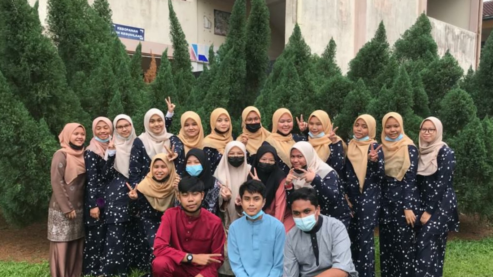
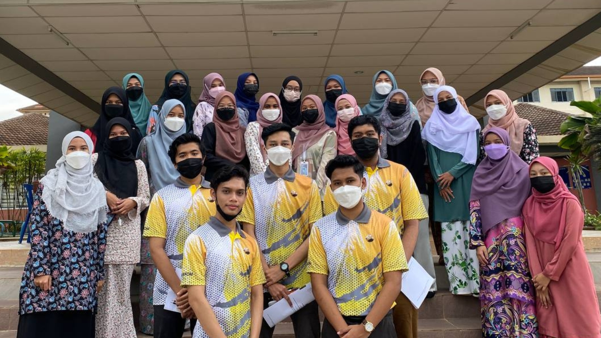
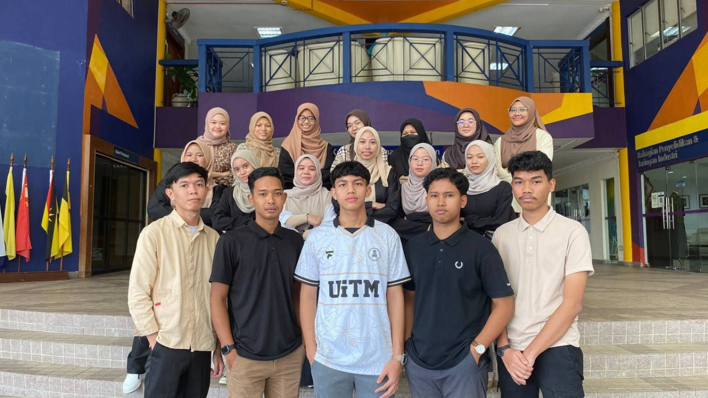
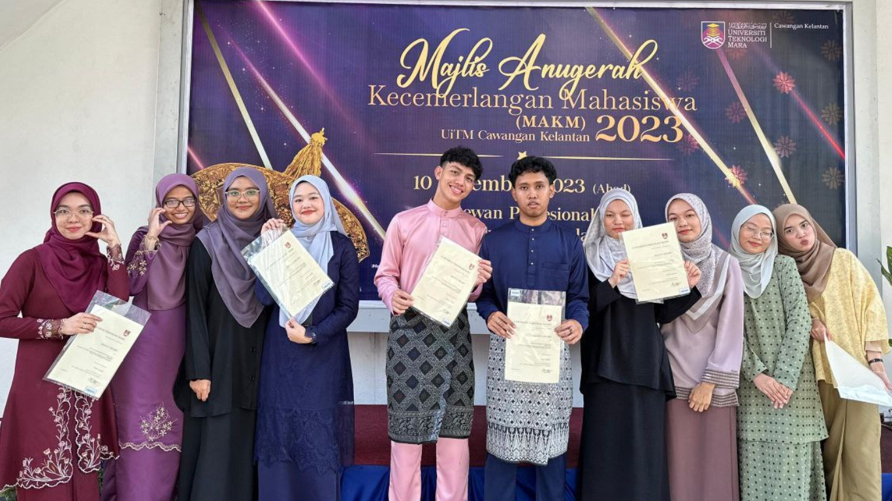

Primary | Secondary | Matriculation | University
I attended primary school at SKBinjai from Year 1 to Year 6. I obtained 3 A's, 1 B, and 1 C in the UPSR.
I attended secondary school at SMKBinjai and it took me 5 years. In 2020, COVID-19 struck, and my SPM had to be extended until 2021. I obtained 4 A's, 3 B's, 1 C, and 1 D in the SPM examination.
With my SPM results, I received an offer to continue my studies at Pahang Matriculation College for one year, which consists of 2 semesters. I obtained a GPA of 3.69 in the final semester.
With the GPA from Pahang Matriculation College, I was offered to further my studies at University Technology MARA (UiTM) in the Bachelor of Business Administration (Hons.) Islamic Banking program at the Kelantan Branch, Kota Bharu Campus. However, I needed to attend the Machang Campus for the first semester because certain subjects were not available at the Kota Bharu Campus.
For the second semester and onwards, I continued my studies at the Kota Bharu Campus until now. I obtained a GPA of 3.72 in the third semester. Currently, I am in the fourth semester, with one more semester of classes and one semester of internship remaining.
